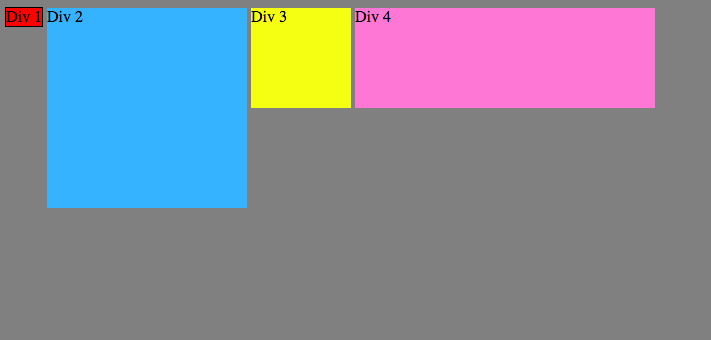
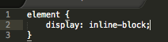
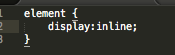

What does it mean to display inline vs using inline block?The display inline-block allows the block to have a different element positioned next to it. For example, one could use display inlin-block to show a paragraph of text next to a table or image
To set up the blocks next to each other, you can use "display: inline;" in the stylesheet, as shown below. Replace "element" with the particular identifier in the html document.
The display inline can be used to position block on the same line, the blocks are aligned at the bottom.
